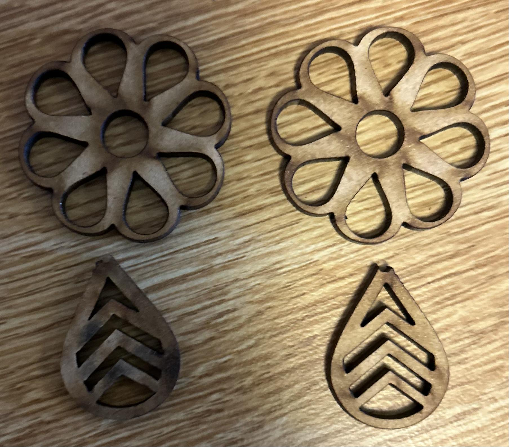
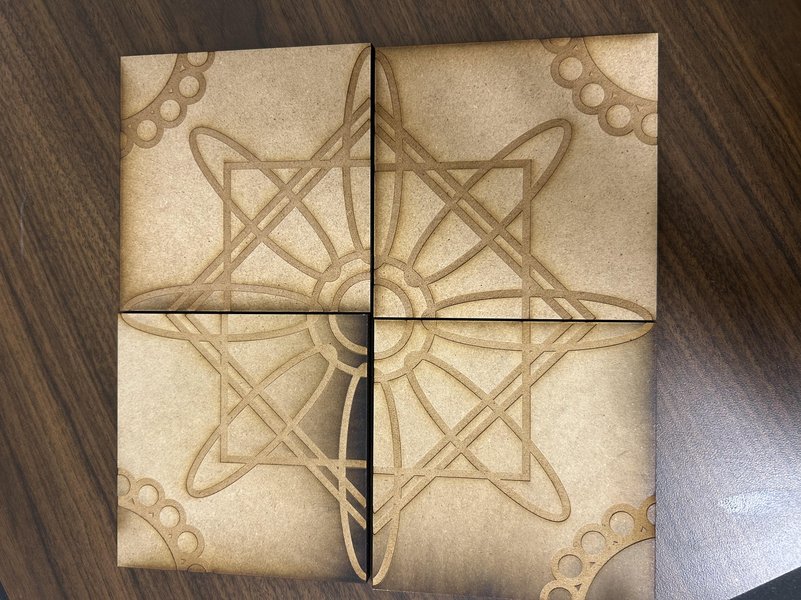

Laser cutting and other hands-on projects · Designed in Adobe Illustrator · Cut from MDF

These earrings were one of my first laser cutting projects. I designed them in Adobe Illustrator, starting from a pair I found online that I really liked, then adding my own modifications before cutting them from medium density fiberboard (MDF) on Northeastern's laser cutter.

This set of four coasters is designed so each piece works on its own, but also fits together as a full flower pattern. I designed the interlocking geometry in Adobe Illustrator and cut it from MDF. The variation in burn tone across pieces — a side effect of previous projects — gives each coaster a bit of unique character that I really like.
Functional pieces for the kitchen, designed with interlocking geometric patterns.
Layered MDF bowls assembled from individually cut rings.
Custom frames sized and styled for specific artwork.
Photo frames with decorative cut patterns along the border.